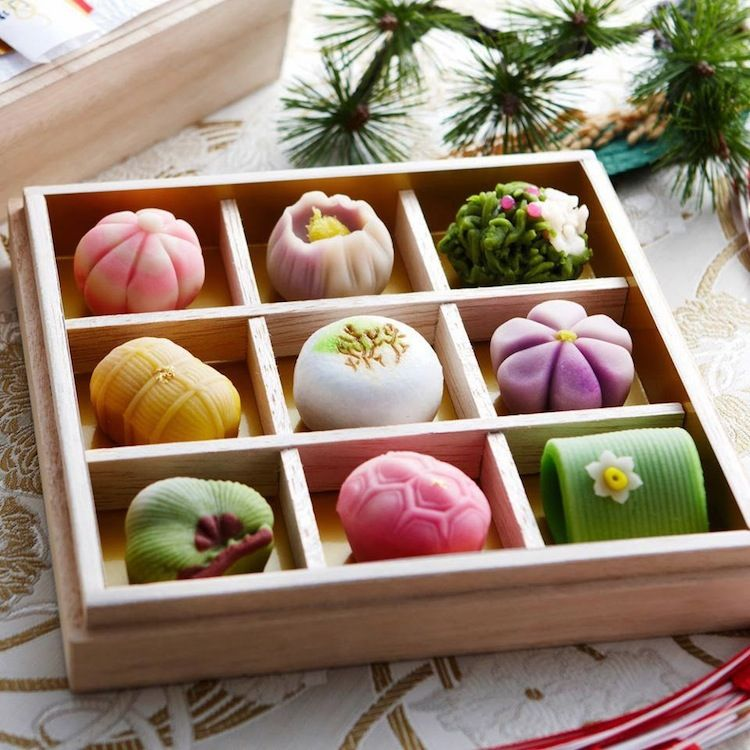
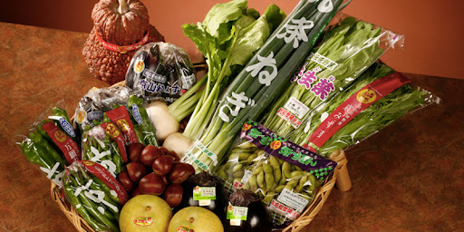
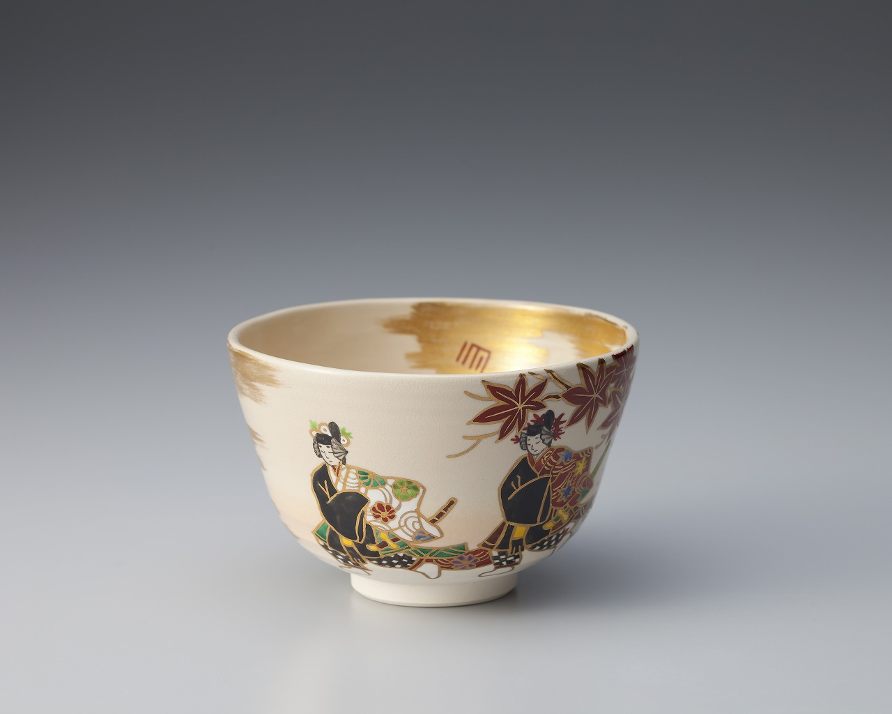
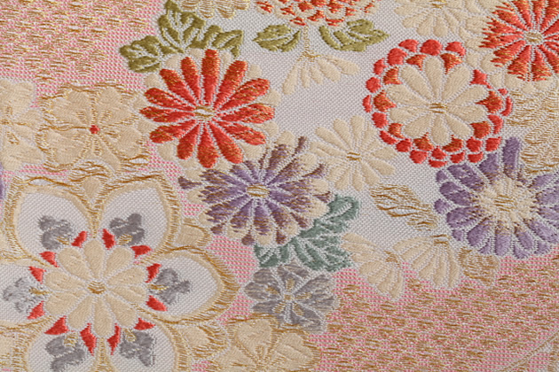
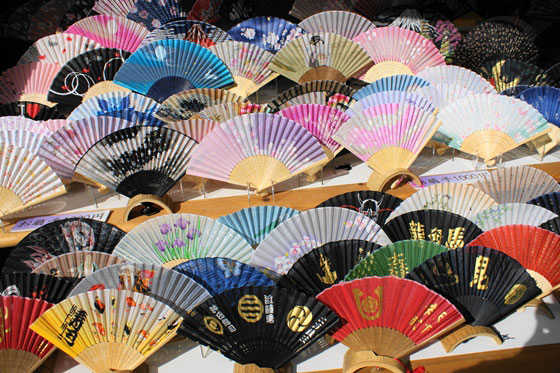
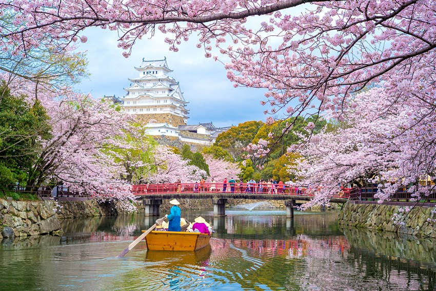
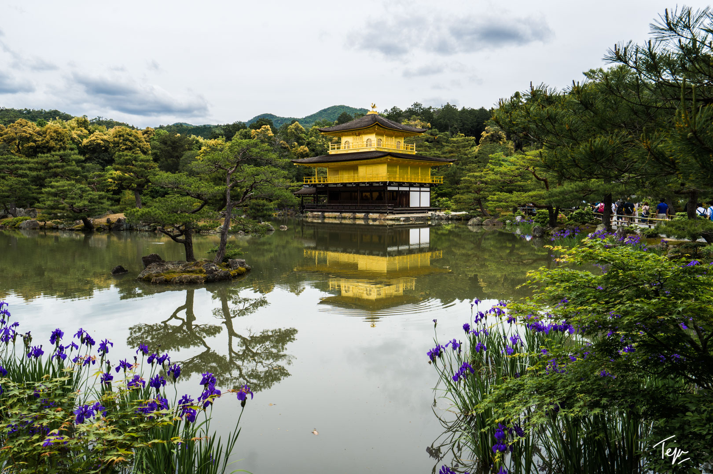
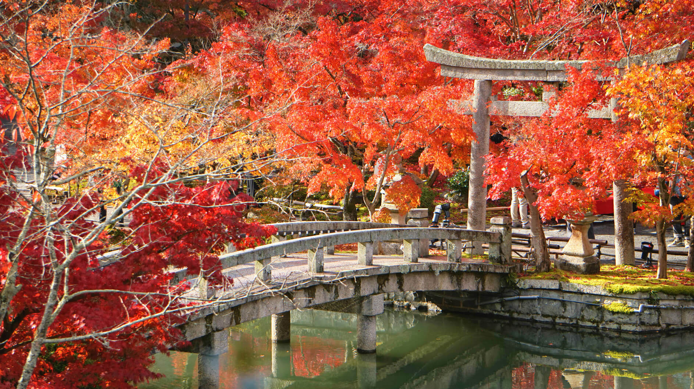
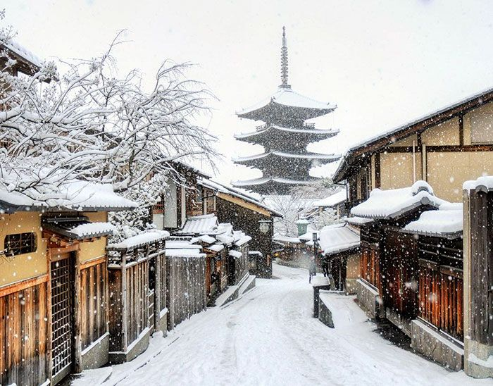

Kyoto is the former capital city of Japan and world-famous for its refined culture, dining, and charm of rural Japan
Kyoto City attracts millions of local and international visitors each year looking for traditional Japanese culture.Temples and shrines such as Kiyomizudera Temple and Kinkakuji draw lots off attention from visitors, as do the bamboo groves of nearby Arashiyama.
Stay in a traditional ryokan, take a dip in a rejuvenating onsen, and enjoy the seasonal changes of cherry blossoms and brilliant autumn foliage.
Kyoto's magic is only a short bullet train ride from Tokyo. Beyond the city lie Kyoto Prefecture's many attractive rural areas.
In the north, Amanohashidate has long been considered one of Japan's three most scenic places. Nestled in the mountains, Miyama is one of the last towns with thatched-roof farmhouses, many of which are still inhabited. Enjoy delicious local vegetables and the famous green tea grown in Uji.
HOW TO GET THERE
Access Kyoto on the bullet train from most major cities in Japan.
The nearest airports are Itami and Kansai International.
Both are in Osaka Prefecture, between 1 hour and 1 hour and 20 minutes away
| Cherry Blossoms |
|---|
| Forecast of first bloom |
| 16 Mar 2021 |
| Forecast of full bloom |
| 26 Mar 2021 |
Don't miss
- Grand temples, shrines, palaces and gardens in Kyoto City and around
- Sumptuous multi-course kaiseki cuisine and refined traditional ryokan accommodations
- White-sand beaches and mineral-rich hot springs on the Tango Peninsula
- One of Japan's three great views at Amanohashidate
Local Specialties
 Yudofu
Yudofu Yudofu, literally "hot-water tofu", is arguably the best way to enjoy high-quality, freshly made tofu. Tofu is warmed through in a simple broth made of water and kombu, and simple condiments are served alongside. Kyoto is the place to enjoy this, as it is the epicenter of Buddhist cuisine, in which yudofu features heavily. |

Kyo-Gashi Kyo-gashi are a type of wagashi, or traditional Japanese sweet. Kyo-gashi are beautiful, colorful and symbolic confections, custom-made for different occasions, so no Kyo-gashi will ever be exactly the same as another. |
| 
Kyo-Yasai Before modern transportation was available, farmers grew only the vegetables most suited to the regions they farmed in. Kyo-yasai are vegetables traditionally grown in Kyoto for centuries, and they play an important role in modern Kyoto cuisine. |
 Uji Tea
Uji TeaGreen tea from Uji is among the oldest and most highly regarded teas in Japan. You'll find it in tiny soba restaurants and temple gardens and many places in between. There are a variety of ways to enjoy green tea while in Uji. |
| 
Kyoto Kiyomizu Ware Handmade ceramics and porcelain known as kyo yaki or Kiyomizu yaki are characterized by painted overglaze enamel. This craft evolved alongside other sophisticated pastimes in Kyoto, including the tea ceremony and flower arranging. |
Kyoto Dyed Silk Invented in the late 17th century, kyo yuzen is a dyeing technique distinguished by vivid colors, subtle gradations, complex patterns and precision linework. The subtle use of stencils, brushes and resists produces designs on textiles similar to traditional Japanese paintings. |
| 
Nishijin Textiles Nishijin ori silk textiles originate in Nishijin, the garment district of Kyoto. Exquisitely decorated brocades have been handwoven here for centuries, and kimono and obi have been tailored from sumptuous gold brocade, damask, figured satin and velvet. Treated with care, these garments can last a lifetime. |

Kyoto Folding Fans Fashioned out of bamboo, the kyo sensu is a folding fan decorated with handmade Japanese paper or silk on thin wooden strips, traditionally cypress. These artful accessories are used at ceremonies, festivals and performances such as Noh theater. |
Seasonal Highlights
| 
Spring Late March to April is the time to view the cherry blossoms and the fresh green maple leaves in shrine and temple gardens. |

Summer Highlights of the hottest season include riverside dining, cormorant fishing performances, beach excursions, the month-long Gion Festival, and fire displays to honor the spirits of ancestors. |
| 
Autumn Kyoto’s autumn foliage attracts visitors from the world over. Harvest moon festivals, such as the Jidai Matsuri, are another autumn highlight. The cool temperatures are perfect for hiking at Mt. Ponpon and Mt. Atago. |

Winter Kabuki’s biggest stars come to perform, plum blossoms emerge after the snows, and countryside onsen offer plenty of warmth. Winter festivals like Arashiyama Hanatoro illuminate the city of Kyoto. |